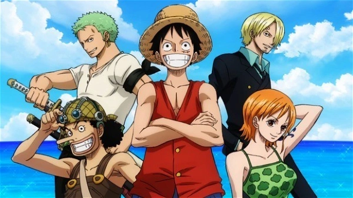
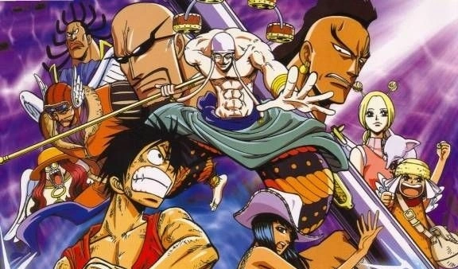

One piece
Com seu primeiro episódio exibido no Japão em 1999, One Piece segue lançando novos episódios até hoje. Ao todo, o anime já tem mais de 1000 capítulos. Não à toa, o aclamado programa que segue as perigosas aventuras dos Piratas Chapéus de Palha ganhou o apelido de "anime infinito". Mas isso não impede o sucesso da produção por todo o mundo. Na verdade, One Piece segue conquistando novos admiradores e mantendo sua já consolidada base de fãs, que pode conferir aqui o resumo de todas as sagas lançadas até agora.
Saga East Blue
Episódios: 1 a 61
A saga que marca o começo de One Piece tem início nos mostrando como o protagonista Monkey D. Luffy acidentalmente consumiu a a fruta Akuma no Mi e ganhou suas habilidades de borracha ainda criança. Embora a fruta também tenha causado a perda de sua capacidade de nadar, ele não deixou que isso afetasse seu sonho de encontrar o tesouro One Piece e se tornar o Rei dos Piratas.
Com o passar dos anos, Luffy aprende a controlar melhor suas habilidades. No decorrer dos episódios, ele vai recrutando sua tripulação, vivendo diferentes aventuras e grandes perigos a cada novo tripulante que tenta convencer a se juntar a sua equipe.
Nesta saga, o protagonista enfreta diferentes conflitos. A luta contra um capitão da marinha. O embate com o perigoso pirata Buggy e o temido Capitão Kuro. A conquista do Going Merry (primeiro navio do grupo de Luffy). O momento em que fica frente à frente com o tirânico Arlong. Luffy passou por tudo isso conforme foi reunindo outros aventureiros em sua tripulação, os Piratas do Chapéu de Palha, até aqui formada por Luffy, Roronoa Zoro, Nami, Usopp e Sanji.
Saga Alabasta

Episódios: 62 a 135
Esta saga tem início com a tripulação do Chapéu de Palha embarcando numa aventura rumo às perigosas corredeiras da Reverse Mountain. O objetivo é entrar na Grand Line, a corrente oceânica conhecida por ser a região mais perigosa do oceano em todo mundo, motivo pelo qual ganhou o apelido de "cemitério de piratas".
A partir do segundo arco desta saga, Luffy já está em posse do Log Pose, o dispositivo de navegação fundamental para viajar pela Grand Line. Eles acabam indo parar em Whisky Peak, a primeira ilha que os Chapéus de Palha encontram na rota. O local é conhecido por acolher os piratas de forma calorosa, mas a tripulação de Luffy logo descobre que há muitos segredos por trás dessa pretensa recepção.
A segunda ilha visitada pelos piratas de Luffy é a Little Garden, uma ilha de verão habitada plantas e animais pré-históricos e dois gigantes, Dorry e Brogy. Marcado pea perseguição do temido Baroque Works aos gigantes e pela guerra que os próprios gigantes parecem destinados a travar, este arco é conhecido por suas cenas de violência.
Nami acaba pegando uma febre mortal em Little Garden, o que faz com que a tripulação de Luffy parta para a ilha seguinte, Drum Island. Lá eles procuram um médico para a pirata. Depois de enfrentar ataques de outros piratas e diferentes criaturas, eles acabam conhecendo Tony Tony Chopper, que entra para o grupo e se torna o médico da tripulação.
Saga Skypiea
Episódios: 136 a 206
Dois arcos filler marcam o início desta saga. No primeiro, Luffy e sua equipe chegam a uma ilha habitada por um grande número de carneiros. Lá, eles aproveitam a oportunidade para ajudar um homem, enquanto fogem da perseguição da marinha. No segundo, a tentativa de fugir da marinha leva o grupo de piratas até a ilha Ruluka. O local era comandado por um ditador que a equipe de Luffy tenta enfrentar. Ao mesmo tempo, eles lutam para sobreviver ao uso da Rainbow mist, uma espécie de névoa que abre um portal para outra dimensão e é usada para capturar a tripulação.
Os Chapéus de Palha dão início ao Arco Jaya com um nova companheira de tripulação, Nico Robin. Neste arco, os piratas tentam resolver o mistério de um barco que caiu do céu e de um mapa que mostra uma cidade chamada Skypiea, enquanto enfrentam os piratas de Masira. A aventura acaba levando a tripulação à ilha de Jaya, onde fica a cidade portuária Mock Town, conhecida por ser cheia de piratas.
Já no arco Skypiea, o grupo de Luffy chega à ilha no céu conhecida como Skypiea. Embora sua ida ao local tenha sido motivada pela procura por outro, a tripulação acaba percebendo que a ilha corre risco de ser destruída pelo temido Enel.
noticias de one piece
A Netflix realmente está investindo nas obras de Eiichiro Oda. Depois de disponibilizar temporadas do anime de One Piece e de lançar o remake em live-action, a plataforma lança o novo anime de Oda, baseado em uma de suas primeiras obras. Vamos conhecer Monstros: A Maldição do Dragão.